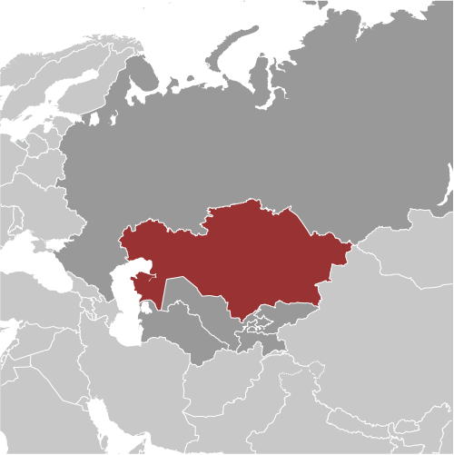
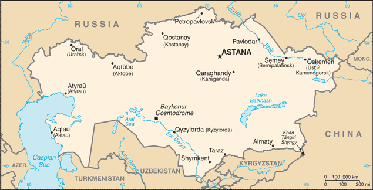
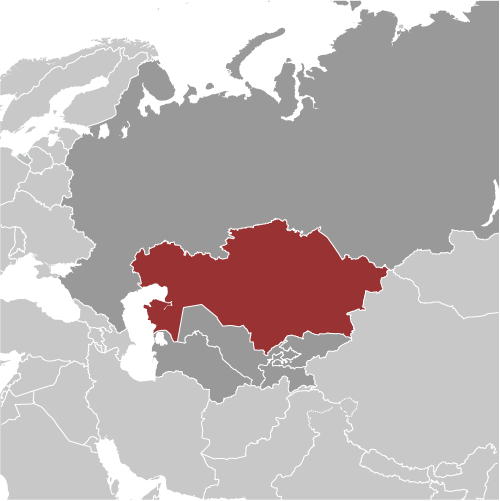
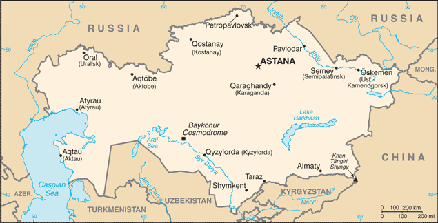

Central Asia :: KAZAKHSTAN
Introduction :: KAZAKHSTAN
-
Ethnic Kazakhs, a mix of Turkic and Mongol nomadic tribes who migrated to the region by the 13th century, were rarely united as a single nation. The area was conquered by Russia in the 18th century, and Kazakhstan became a Soviet Republic in 1936. Soviet policies reduced the number of ethnic Kazakhs in the 1930s and enabled non-ethnic Kazakhs to outnumber natives. During the 1950s and 1960s agricultural "Virgin Lands" program, Soviet citizens were encouraged to help cultivate Kazakhstan's northern pastures. This influx of immigrants (mostly Russians, but also some other deported nationalities) further skewed the ethnic mixture. Non-Muslim ethnic minorities departed Kazakhstan in large numbers from the mid-1990s through the mid-2000s and a national program has repatriated about a million ethnic Kazakhs back to Kazakhstan. These trends have allowed Kazakhs to become the titular majority again. This dramatic demographic shift has also undermined the previous religious diversity and made the country more than 70% Muslim. Kazakhstan's economy is larger than those of all the other Central Asian states largely due to the country's vast natural resources. Current issues include: developing a cohesive national identity, expanding the development of the country's vast energy resources and exporting them to world markets, diversifying the economy, enhancing Kazakhstan's economic competitiveness, and strengthening relations with neighboring states and foreign powers.
Geography :: KAZAKHSTAN
-
Central Asia, northwest of China; a small portion west of the Ural (Zhayyq) River in easternmost Europe48 00 N, 68 00 EAsiatotal: 2,724,900 sq kmland: 2,699,700 sq kmwater: 25,200 sq kmcountry comparison to the world: 10slightly less than four times the size of Texastotal: 13,364 kmborder countries (5): China 1,765 km, Kyrgyzstan 1,212 km, Russia 7,644 km, Turkmenistan 413 km, Uzbekistan 2,330 km0 km (landlocked); note - Kazakhstan borders the Aral Sea, now split into two bodies of water (1,070 km), and the Caspian Sea (1,894 km)none (landlocked)continental, cold winters and hot summers, arid and semiaridvast flat steppe extending from the Volga in the west to the Altai Mountains in the east and from the plains of western Siberia in the north to oases and deserts of Central Asia in the southmean elevation: 387 melevation extremes: lowest point: Vpadina Kaundy -132 mhighest point: Khan Tangiri Shyngy (Pik Khan-Tengri) 6,995 mmajor deposits of petroleum, natural gas, coal, iron ore, manganese, chrome ore, nickel, cobalt, copper, molybdenum, lead, zinc, bauxite, gold, uraniumagricultural land: 77.4%arable land 8.9%; permanent crops 0%; permanent pasture 68.5%forest: 1.2%other: 21.4% (2011 est.)20,660 sq km (2012)most of the country displays a low population density, particularly the interior; population clusters appear in urban agglomerations in the far northern and southern portions of the countryearthquakes in the south; mudslides around Almatyradioactive or toxic chemical sites associated with former defense industries and test ranges scattered throughout the country pose health risks for humans and animals; industrial pollution is severe in some cities; because the two main rivers that flowed into the Aral Sea have been diverted for irrigation, it is drying up and leaving behind a harmful layer of chemical pesticides and natural salts; these substances are then picked up by the wind and blown into noxious dust storms; pollution in the Caspian Sea; soil pollution from overuse of agricultural chemicals and salination from poor infrastructure and wasteful irrigation practicesparty to: Air Pollution, Biodiversity, Climate Change, Desertification, Endangered Species, Environmental Modification, Hazardous Wastes, Ozone Layer Protection, Ship Pollution, Wetlandssigned, but not ratified: Climate Change-Kyoto Protocolworld's largest landlocked country and one of only two landlocked countries in the world that extends into two continents (the other is Azerbaijan); Russia leases approximately 6,000 sq km of territory enclosing the Baykonur Cosmodrome; in January 2004, Kazakhstan and Russia extended the lease to 2050
People and Society :: KAZAKHSTAN
-
18,556,698 (July 2017 est.)country comparison to the world: 62noun: Kazakhstani(s)adjective: KazakhstaniKazakh (Qazaq) 63.1%, Russian 23.7%, Uzbek 2.9%, Ukrainian 2.1%, Uighur 1.4%, Tatar 1.3%, German 1.1%, other 4.4% (2009 est.)Kazakh (official, Qazaq) 74% (understand spoken language), Russian (official, used in everyday business, designated the "language of interethnic communication") 94.4% (understand spoken language) (2009 est.)Muslim 70.2%, Christian 26.2% (mainly Russian Orthodox), other 0.2%, atheist 2.8%, unspecified 0.5% (2009 est.)0-14 years: 25.91% (male 2,374,427/female 2,434,212)15-24 years: 14.05% (male 1,329,376/female 1,277,615)25-54 years: 42.42% (male 3,847,282/female 4,024,052)55-64 years: 9.97% (male 810,019/female 1,040,917)65 years and over: 7.65% (male 494,064/female 924,734) (2017 est.)total dependency ratio: 50.4youth dependency ratio: 40.3elderly dependency ratio: 10.2potential support ratio: 9.8 (2015 est.)total: 30.6 yearsmale: 29.3 yearsfemale: 31.9 years (2017 est.)country comparison to the world: 1131.04% (2017 est.)country comparison to the world: 11618.1 births/1,000 population (2017 est.)country comparison to the world: 988.1 deaths/1,000 population (2017 est.)country comparison to the world: 880.4 migrant(s)/1,000 population (2017 est.)country comparison to the world: 64most of the country displays a low population density, particularly the interior; population clusters appear in urban agglomerations in the far northern and southern portions of the countryurban population: 53.2% of total population (2017)rate of urbanization: 0.94% annual rate of change (2015-20 est.)Almaty 1.523 million; ASTANA (capital) 759,000 (2015)at birth: 0.94 male(s)/female0-14 years: 0.98 male(s)/female15-24 years: 1.04 male(s)/female25-54 years: 0.95 male(s)/female55-64 years: 0.78 male(s)/female65 years and over: 0.53 male(s)/femaletotal population: 0.92 male(s)/female (2016 est.)25 years (2014 est.)12 deaths/100,000 live births (2015 est.)country comparison to the world: 142total: 19.6 deaths/1,000 live birthsmale: 22.3 deaths/1,000 live birthsfemale: 17.2 deaths/1,000 live births (2017 est.)country comparison to the world: 82total population: 71.1 yearsmale: 65.9 yearsfemale: 76 years (2017 est.)country comparison to the world: 1522.25 children born/woman (2017 est.)country comparison to the world: 9455.7% (2015)4.4% of GDP (2014)country comparison to the world: 1583.27 physicians/1,000 population (2014)7.2 beds/1,000 population (2012)improved:urban: 99.4% of populationrural: 85.6% of populationtotal: 92.9% of populationunimproved:urban: 0.6% of populationrural: 14.4% of populationtotal: 7.1% of population (2015 est.)improved:urban: 97% of populationrural: 98.1% of populationtotal: 97.5% of populationunimproved:urban: 3% of populationrural: 1.9% of populationtotal: 2.5% of population (2015 est.)0.2% (2016 est.)country comparison to the world: 9026,000 (2016 est.)country comparison to the world: 68<1000 (2016 est.)21% (2016)country comparison to the world: 942% (2015)country comparison to the world: 1003.1% of GDP (2009)country comparison to the world: 138definition: age 15 and over can read and writetotal population: 99.8%male: 99.8%female: 99.8% (2015 est.)total: 15 yearsmale: 15 yearsfemale: 15 years (2016)total: 3.9%male: 3.6%female: 4.3% (2013 est.)country comparison to the world: 128
Government :: KAZAKHSTAN
-
conventional long form: Republic of Kazakhstanconventional short form: Kazakhstanlocal long form: Qazaqstan Respublikasylocal short form: Qazaqstanformer: Kazakh Soviet Socialist Republicetymology: the name "Kazakh" derives from the Turkic word "kaz" meaning "to wander," recalling the Kazakh's nomadic lifestyle; the Persian suffix "-stan" means "place of" or "country," so the word Kazakhstan literally means "Land of the Wanderers"presidential republicname: Astanageographic coordinates: 51 10 N, 71 25 Etime difference: UTC+6 (11 hours ahead of Washington, DC, during Standard Time)note: Kazakhstan has two time zones14 provinces (oblyslar, singular - oblys) and 2 cities* (qalalar, singular - qala); Almaty (Taldyqorghan), Almaty*, Aqmola (Kokshetau), Aqtobe, Astana*, Atyrau, Batys Qazaqstan [West Kazakhstan] (Oral), Mangghystau (Aqtau), Ongtustik Qazaqstan [South Kazakhstan] (Shymkent), Pavlodar, Qaraghandy, Qostanay, Qyzylorda, Shyghys Qazaqstan [East Kazakhstan] (Oskemen), Soltustik Qazaqstan [North Kazakhstan] (Petropavl), Zhambyl (Taraz)note: administrative divisions have the same names as their administrative centers (exceptions have the administrative center name following in parentheses); in 1995, the Governments of Kazakhstan and Russia entered into an agreement whereby Russia would lease for a period of 20 years an area of 6,000 sq km enclosing the Baykonur space launch facilities and the city of Bayqongyr (Baykonur, formerly Leninsk); in 2004, a new agreement extended the lease to 205016 December 1991 (from the Soviet Union)Independence Day, 16 December (1991)history: previous 1937, 1978 (preindependence), 1993; latest approved by referendum 30 August 1995, effective 5 September 1995amendments: proposed by the president of the republic on the recommendation of Parliament or the government; the president has the option of submitting draft amendments to Parliament or directly to a referendum; passage of amendments to Parliament requires three-fourths majority vote of both houses and the signature of the president; passage by referendum requires absolute majority vote by more than one-half of the voters in at least two-thirds of the oblasts, major cities, and the capital, followed by the signature of the president; amended several times, last in 2017 (2017)civil law system influenced by Roman-Germanic law and by the theory and practice of the Russian Federationhas not submitted an ICJ jurisdiction declaration; non-party state to the ICCtcitizenship by birth: nocitizenship by descent only: at least one parent must be a citizen of Kazakhstandual citizenship recognized: noresidency requirement for naturalization: 5 years18 years of age; universalchief of state: President Nursultan Abishuly NAZARBAYEV (chairman of the Supreme Soviet from 22 February 1990, elected president 1 December 1991)head of government: Prime Minister Bakytzhan SAGINTAYEV (since 9 September 2016); First Deputy Prime Minister Askar MAMIN (since 13 September 2016)cabinet: Council of Ministers appointed by the presidentelections/appointments: president directly elected by simple majority popular vote for a 5-year term (eligible for a second consecutive term); election last held on 26 April 2015 (next to be held in 2020); prime minister and deputy prime minister appointed by the president, approved by the Mazhilis; note - constitutional amendments in May 2007 shortened the presidential term from 7 to 5 years and established a 2-consecutive-term limit; NAZARBAYEV has official status as the "First President of Kazakhstan" and is allowed unlimited termselection results: Nursultan Abishuly NAZARBAYEV reelected president; percent of vote - Nursultan Abishuly NAZARBAYEV (Nur Otan) 97.8%, other 2.2%description: bicameral Parliament consists of the Senate (47 seats; 32 members indirectly elected by majority 2-round vote by the oblast-level assemblies and 15 members appointed by the president; members serve 6-year terms, with one-half of the membership renewed every 3 years) and the Mazhilis (107 seats; 98 members directly elected in a single national constituency by proportional representation vote to serve 5-year terms and 9 indirectly elected by the Assembly of People of Kazakhstan, a 350-member, presidentially appointed advisory body designed to represent the country's ethnic minorities)elections: Senate - last held on 28 June 2017 (next to be held in 2020); Mazhilis - last held on 20 March 2016 (next to be held by 2021)election results: Senate - percent of vote by party - NA; seats by party - Nur Otan 16; Mazhilis - percent of vote by party - Nur Otan 82.2%, Ak Zhol 7.2%, Communist People's Party 7.1%, other 3.5%; seats by party - Nur Otan 84, Ak Zhol 7, Communist People's Party 7highest court(s): Supreme Court of the Republic (consists of 44 members); Constitutional Council (consists of 7 members)judge selection and term of office: Supreme Court judges proposed by the president of the republic on recommendation of the Supreme Judicial Council and confirmed by the Senate; judges normally serve until age 65 but can be extended to age 70; Constitutional Council - the president of the republic, the Senate chairperson, and the Majilis chairperson each appoints 1 member for a 3-year term and each appoints 1 member for a 6-year term; chairperson of the Constitutional Council appointed by the president of the republic for a 6-year termsubordinate courts: regional and local courtsAk Zhol (Bright Path) Party or Democratic Party of Kazakhstan Ak Zhol [Azat PERUASHEV]Auyl National Patriotic Party [Ali BEKTAYEV] (a merger of the Patriots’ Party and the Auyl Social Democratic Party)Birlik (Unity) [Serik SULTANGALI] (a merger of Adilet (Justice; formerly Democratic Party of Kazakhstan) and Rukhaniyat (Spirituality))Communist People's Party of Kazakhstan [Vladislav KOSAREV]National Social Democratic Party or NSDP [Zharmakhan TUYAKBAY]Nur Otan (Radiant Fatherland) Democratic People's Party [Nursultan NAZARBAYEV] (the Agrarian, Asar, and Civic parties merged with Otan)Adil-Soz [Tamara KALEYEVA]Chairman of Bureau's Council [Roza AKYLBEKOVA]Foundation for Support of Civil Initiatives [Nurul RAKHIMBEK]International Legal Initiative [Aina SHORMANBAYEVA]Kazakhstan International Bureau on Human Rights and Rule of Law or KIBHR [Rosa AKYLBEKOVA]Legal Media Centre (sometimes known as the North Kazakhstan Legal Media Centre) [Diana OKREMOVA]Public Foundation for Parliamentary Development [Zauresh BATTALOVA]Republican Network of International Monitors or RNIM [Daniyar LIVAZOV]Transparency International [Natalya KOVALEVA]ADB, CICA, CIS, CSTO, EAEU, EAPC, EBRD, ECO, EITI (compliant country), FAO, GCTU, IAEA, IBRD, ICAO, ICC (NGOs), ICRM, IDA, IDB, IFAD, IFC, IFRCS, ILO, IMF, IMO, Interpol, IOC, IOM, IPU, ISO, ITSO, ITU, MIGA, MINURSO, NAM (observer), NSG, OAS (observer), OIC, OPCW, OSCE, PFP, SCO, UN, UN Security Council (temporary), UNCTAD, UNESCO, UNIDO, UNWTO, UPU, WCO, WFTU (NGOs), WHO, WIPO, WMO, WTO (observer), ZCchief of mission: Ambassador Erzhar KAZYKHANOV (since 24 April 2017)chancery: 1401 16th Street NW, Washington, DC 20036telephone: [1] (202) 232-5488FAX: [1] (202) 232-5845consulate(s) general: New Yorkchief of mission: Ambassador George KROL (since 18 March 2015)embassy: Rakhymzhan Koshkarbayev Ave. No 3, Astana 010010mailing address: use embassy street addresstelephone: [7] (7172) 70-21-00FAX: [7] (7172) 54-09-14Consulate(s) General: Almatya gold sun with 32 rays above a soaring golden steppe eagle, both centered on a sky blue background; the hoist side displays a national ornamental pattern "koshkar-muiz" (the horns of the ram) in gold; the blue color is of religious significance to the Turkic peoples of the country, and so symbolizes cultural and ethnic unity; it also represents the endless sky as well as water; the sun, a source of life and energy, exemplifies wealth and plenitude; the sun's rays are shaped like grain, which is the basis of abundance and prosperity; the eagle has appeared on the flags of Kazakh tribes for centuries and represents freedom, power, and the flight to the futuregolden eagle; national colors: blue, yellowname: "Menin Qazaqstanim" (My Kazakhstan)lyrics/music: Zhumeken NAZHIMEDENOV and Nursultan NAZARBAYEV/Shamshi KALDAYAKOVnote: adopted 2006; President Nursultan NAZARBAYEV played a role in revising the lyrics
Economy :: KAZAKHSTAN
-
Kazakhstan, geographically the largest of the former Soviet republics, excluding Russia, possesses substantial fossil fuel reserves and other minerals and metals, such as uranium, copper, and zinc. It also has a large agricultural sector featuring livestock and grain. The government realizes that its economy suffers from an overreliance on oil and extractive industries and has made initial attempts to diversify its economy by targeting sectors like transport, pharmaceuticals, telecommunications, petrochemicals and food processing for greater development and investment.Kazakhstan's vast hydrocarbon and mineral reserves form the backbone of its economy. Chevron-led Tengizchevroil announced a $36.8 billion expansion of Kazakhstan’s premiere Tengiz oil field in July 2016. Meanwhile, the super-giant Kashagan field finally launched production in October 2016 after years of delay and an estimated $55 billion in development costs.Kazakhstan is landlocked and depends on Russia to export its oil to Europe. It also exports oil directly to China. In 2010, Kazakhstan joined Russia and Belarus to establish a Customs Union in an effort to boost foreign investment and improve trade. The Customs Union evolved into a Single Economic Space in 2012 and the Eurasian Economic Union (EAEU) in January 2015. In part due to weak commodity prices, Kazakhstan’s exports to EAEU countries declined 23.5% in 2016. Imports from EAEU countries to Kazakhstan declined 13.7%.The economic downturn of its EAEU partner, Russia, and the decline in global commodity prices from 2014 to 2015 contributed to an economic slowdown in Kazakhstan, which continues to experience its slowest economic growth since the financial crises of 2008-09. In 2014, Kazakhstan devalued its currency, the tenge, and announced a stimulus package to cope with its economic challenges. In the face of further decline in the ruble, oil prices, and the regional economy, Kazakhstan announced in 2015 it would replace its currency band with a floating exchange rate, leading to a sharp fall in the value of the tenge. Since reaching a low of 391 to the dollar in January 2016, the tenge has modestly appreciated, helped by somewhat higher oil prices.Despite some positive institutional and legislative changes in the last several years, investors remain concerned about corruption, bureaucracy, and arbitrary law enforcement, especially at the regional and municipal levels. An additional concern is the condition of the country’s banking sector, which suffers from low liquidity, poor asset quality, and a lack of transparency. Investors also question the potentially negative effects on the economy of a contested presidential succession as Kazakhstan’s first president, Nursultan NAZARBAYEV, who turns 77 in 2017, has not announced whether he will seek reelection in 2019.$451.2 billion (2016 est.)$440.7 billion (2015 est.)$430.8 billion (2014 est.)note: data are in 2016 dollarscountry comparison to the world: 42$133.7 billion (2016 est.)1.1% (2016 est.)1.2% (2015 est.)4.3% (2014 est.)country comparison to the world: 170$25,200 (2016 est.)$25,300 (2015 est.)$25,300 (2014 est.)note: data are in 2016 dollarscountry comparison to the world: 7722.3% of GDP (2016 est.)26.6% of GDP (2015 est.)28.6% of GDP (2014 est.)country comparison to the world: 78household consumption: 55.8%government consumption: 12.2%investment in fixed capital: 23%investment in inventories: 5.3%exports of goods and services: 33.3%imports of goods and services: -29.6% (2016 est.)agriculture: 4.8%industry: 33.9%services: 61.3% (2016 est.)grain (mostly spring wheat and barley), potatoes, vegetables, melons; livestockoil, coal, iron ore, manganese, chromite, lead, zinc, copper, titanium, bauxite, gold, silver, phosphates, sulfur, uranium, iron and steel; tractors and other agricultural machinery, electric motors, construction materials1.3% (2016 est.)country comparison to the world: 1348.999 million (2016 est.)country comparison to the world: 54agriculture: 18.1%industry: 20.4%services: 61.6% (2017 est.)5% (2016 est.)5% (2015 est.)country comparison to the world: 672.7% (2015 est.)lowest 10%: 4.3%highest 10%: 22% (2013 est.)26.3 (2013)31.5 (2003)country comparison to the world: 141revenues: $27.21 billionexpenditures: $27.57 billion (2016 est.)20.3% of GDP (2016 est.)country comparison to the world: 149-0.3% of GDP (2016 est.)country comparison to the world: 5226.2% of GDP (2016 est.)23.4% of GDP (2015 est.)country comparison to the world: 172calendar year14.6% (2016 est.)6.7% (2015 est.)country comparison to the world: 21411% (10 April 2017)12% (9 January 2017)country comparison to the world: 1915.33% (31 December 2016 est.)13.18% (31 December 2015 est.)country comparison to the world: 41$13.81 billion (31 December 2016 est.)$8.934 billion (31 December 2015 est.)country comparison to the world: 74$37.78 billion (31 December 2016 est.)$25.34 billion (31 December 2015 est.)country comparison to the world: 74$55.53 billion (31 December 2016 est.)$51.85 billion (31 December 2015 est.)country comparison to the world: 63$744 million (31 December 2016 est.)$4.737 billion (31 December 2015 est.)$26.23 billion (31 December 2013 est.)country comparison to the world: 109$-8.518 billion (2016 est.)$-5.142 billion (2015 est.)country comparison to the world: 181$37.3 billion (2016 est.)$46.52 billion (2015 est.)country comparison to the world: 51oil and oil products, natural gas, ferrous metals, chemicals, machinery, grain, wool, meat, coalItaly 20.3%, China 11.5%, Russia 9.5%, Netherlands 8.9%, Switzerland 7.3%, France 4.9% (2016)$27.87 billion (2016 est.)$33.84 billion (2015 est.)country comparison to the world: 62machinery and equipment, metal products, foodstuffsRussia 36.2%, China 14.5%, Germany 5.7%, US 5.1% (2016)$29.53 billion (31 December 2016 est.)$27.87 billion (31 December 2015 est.)country comparison to the world: 50$163.8 billion (31 December 2016 est.)$154.3 billion (31 December 2015 est.)country comparison to the world: 39$143.2 billion (31 December 2016 est.)$125.6 billion (31 December 2015 est.)country comparison to the world: 36$32.74 billion (31 December 2016 est.)$29.53 billion (31 December 2015 est.)country comparison to the world: 49tenge (KZT) per US dollar -342.13 (2016 est.)342.13 (2015 est.)221.73 (2014 est.)179.19 (2013 est.)149.11 (2012 est.)
Energy :: KAZAKHSTAN
-
electrification - total population: 100% (2016)100.4 billion kWh (2015 est.)country comparison to the world: 3695.26 billion kWh (2015 est.)country comparison to the world: 341.614 billion kWh (2015 est.)country comparison to the world: 471.618 billion kWh (2015 est.)country comparison to the world: 5822.06 million kW (2016 est.)country comparison to the world: 3986.1% of total installed capacity (2015 est.)country comparison to the world: 740% of total installed capacity (2015 est.)country comparison to the world: 12413.3% of total installed capacity (2015 est.)country comparison to the world: 1110.8% of total installed capacity (2015 est.)country comparison to the world: 1451.595 million bbl/day (2016 est.)country comparison to the world: 161.292 million bbl/day (2016 est.)country comparison to the world: 13145,800 bbl/day (2014 est.)country comparison to the world: 3730 billion bbl (1 January 2017 es)country comparison to the world: 12228,600 bbl/day (2016 est.)country comparison to the world: 47186,300 bbl/day (2016 est.)country comparison to the world: 57846 bbl/day (2015 est.)country comparison to the world: 10944,490 bbl/day (2015 est.)country comparison to the world: 8921.38 billion cu m (2016 est.)country comparison to the world: 3013.1 billion cu m (2016 est.)country comparison to the world: 5013.7 billion cu m (2016 est.)country comparison to the world: 204.7 billion cu m (2015 est.)country comparison to the world: 342.407 trillion cu m (1 January 2017 es)country comparison to the world: 15257.8 million Mt (2014 est.)country comparison to the world: 25
Communications :: KAZAKHSTAN
-
total subscriptions: 3,931,100subscriptions per 100 inhabitants: 21 (July 2016 est.)country comparison to the world: 39total: 25.395 millionsubscriptions per 100 inhabitants: 138 (July 2016 est.)country comparison to the world: 45general assessment: inherited an outdated telecommunications network from the Soviet era requiring modernizationdomestic: intercity by landline and microwave radio relay; number of fixed-line connections is inadequate; mobile-cellular usage increased rapidly and the subscriber base approaches 140 per 100 personsinternational: country code - 7; international traffic with other former Soviet republics and China carried by landline and microwave radio relay and with other countries by satellite and by the Trans-Asia-Europe (TAE) fiber-optic cable; satellite earth stations - 2 Intelsat (2017)state owns nearly all radio and TV transmission facilities and operates national TV and radio networks; there are 3 TV channels: Kazakhstan, KAZsport, Balapan; and 4 radio stations: Kazakh Radiosy, Shalkar, Astana, and Classic; some former state-owned media outlets have been privatized; households with satellite dishes have access to foreign media; a small number of commercial radio stations operate along with state-run radio stations; recent legislation requires all media outlets to register with the government and all TV providers to broadcast in digital format by 2018; broadcasts reach 98.63% of the population as well as neighboring countries (2017).kztotal: 14,100,751percent of population: 76.8% (July 2016 est.)country comparison to the world: 45
Transportation :: KAZAKHSTAN
-
number of registered air carriers: 10inventory of registered aircraft operated by air carriers: 71annual passenger traffic on registered air carriers: 5,081,631annual freight traffic on registered air carriers: 37,669,008 mt-km (2015)UP (2016)96 (2013)country comparison to the world: 59total: 63over 3,047 m: 102,438 to 3,047 m: 251,524 to 2,437 m: 15914 to 1,523 m: 5under 914 m: 8 (2017)total: 33over 3,047 m: 52,438 to 3,047 m: 71,524 to 2,437 m: 3914 to 1,523 m: 5under 914 m: 13 (2013)3 (2013)condensate 658 km; gas 12,432 km; oil 11,313 km; refined products 1,095 km; water 1,465 km (2013)total: 14,184 kmbroad gauge: 14,184 km 1.520-m gauge (4,056 km electrified) (2014)country comparison to the world: 19total: 97,418 kmpaved: 87,140 kmunpaved: 10,278 km (2012)country comparison to the world: 484,000 km (on the Ertis (Irtysh) River (80%) and Syr Darya (Syrdariya) River) (2010)country comparison to the world: 25total: 11by type: cargo 1, petroleum tanker 8, refrigerated cargo 1, specialized tanker 1foreign-owned: 3 (Austria 1, Ireland 1, Turkey 1) (2010)country comparison to the world: 109major seaport(s): Caspian Sea - Aqtau (Shevchenko), Atyrau (Gur'yev)river port(s): Oskemen (Ust-Kamenogorsk), Pavlodar, Semey (Semipalatinsk) (Irtysh River)
Military and Security :: KAZAKHSTAN
-
0.82% of GDP (2016)3.45% of GDP (2015)1.04% of GDP (2014)1.08% of GDP (2013)1.05% of GDP (2012)country comparison to the world: 81Kazakhstan Armed Forces: Land Forces, Navy, Air Defense Forces (2017)18 is the legal minimum age for compulsory military service; conscript service obligation is 2 years, but Kazakhstan is transitioning to a largely contract force; military cadets in intermediate (ages 15-17) and higher (ages 17-21) education institutes are classified as military service personnel (2017)
Transnational Issues :: KAZAKHSTAN
-
Kyrgyzstan has yet to ratify the 2001 boundary delimitation with Kazakhstan; field demarcation of the boundaries commenced with Uzbekistan in 2004 and with Turkmenistan in 2005; ongoing demarcation with Russia began in 2007; demarcation with China was completed in 2002; creation of a seabed boundary with Turkmenistan in the Caspian Sea remains under discussion; Azerbaijan, Kazakhstan, and Russia ratified Caspian seabed delimitation treaties based on equidistance, while Iran continues to insist on a one-fifth slice of the seastateless persons: 8,451 (2016)significant illicit cultivation of cannabis for CIS markets, as well as limited cultivation of opium poppy and ephedra (for the drug ephedrine); limited government eradication of illicit crops; transit point for Southwest Asian narcotics bound for Russia and the rest of Europe; significant consumer of opiates